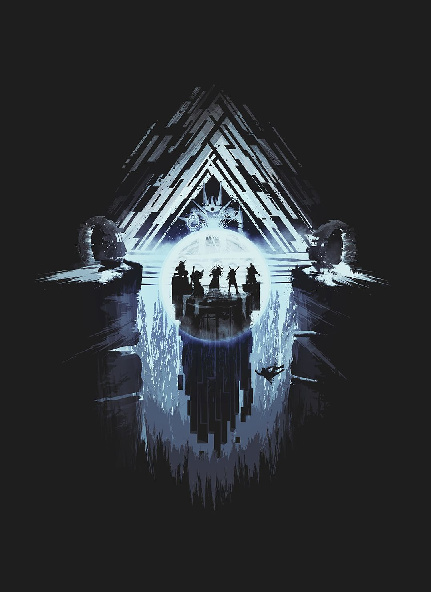

The Vault
His name was Kabr. He wasn't my friend but I knew and respected him as a Guardian and a good man.
He fought the Vex alone. This destroyed him. In the time before he vanished he said things that I think should be remembered. These are some of them:
"In the Vault time frays and a needle moves through it. The needle is the will of Atheon. I do not know the name of the shape that comes after the needle.
No one can open the Vault alone. I opened the Vault. There was no one with me but I was not alone.
You will meet the Templar in a place that is a time before or after stars. The stars will move around you and mark you and sing to you. They will decide if you are real.
I drank of them. It tasted like the sea."
That is all I can remember.
- Pahanin
The Templar
Even among the Axis Minds, the Templar is extraordinary. Fragmentary glimpses and scattered reports suggest a Hydra of impossible capabilities - a creature out of time. The Templar and the Oracles guard the way into the deeper Vault. Legends say that the Oracles foresee what is to come, a world as the Vex desire it - and that the Templar has the power to shape reality to match the Oracles' design, expunging any threats.
The Gorgons
Deep in the Vault of Glass, the fabric of reality bends to the will of the Vex. Warlocks speak in tones of awe of the Gorgons - creatures that seem to possess a dreaded, almost unimaginable strength: an ontological weapon. Like the Oracles and the Templar, the Gorgons reputedly possess the ability to define what is and is not real. Whatever they perceive becomes subject to erasure at their will. Until a countermeasure can be found, Guardians must avoid their gaze at all costs - or reply to any detection with immediate, overwhelming force. The Gorgons' ability must be tied to the nature of the Vault of Glass. We can take some solace in the clear fact that the Vex cannot manifest this power in the world outside.
Atheon
To speak of Atheon is to accept certain limitations. We are ill-equipped to understand an entity that defies simple causality. Let us accept these limitations and proceed. Atheon waits in the Vault of Glass. Just as Atheon sidesteps 'past' and 'future', it is impossible to say whether Atheon created the Vault or the Vault created Atheon. Causal pathways converge on Atheon from every axis in the space-time bulk. Atheon has a function. We hazard that it regulates and oversees the Vex conflux system. What are these confluxes? How do they relate to the physical Vex network that has devoured so much of Mercury and Venus? We might guess that the Vex confluxes represent the extension of this network across space and time. Perhaps the Vex use closed timelike curves to solve unfathomable computations. Or the Vex may seek to transcend a physical substrate, and move their thoughts directly into the fundament of the universe. If physics is a set of rules that the cosmos uses to calculate itself, perhaps the Vex seek to worm their way into these calculations: to become a law of reality, inseparable from existence. A virus in the system. Perhaps Atheon was the centerpiece of this project, a command nexus that unified efforts across time. But we must accept that all of this is speculation.